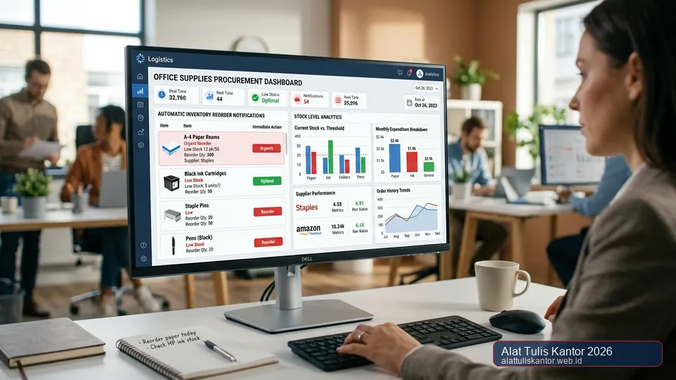
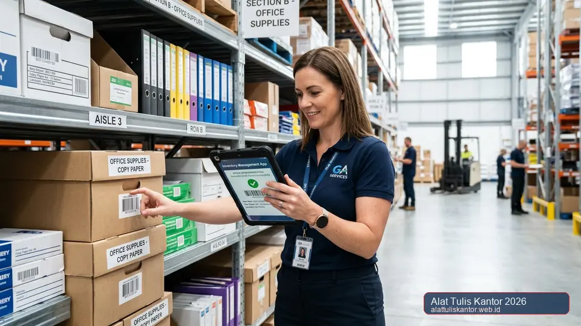

Stok ATK yang tiba-tiba habis justru pada saat dibutuhkan untuk mencetak dokumen penting adalah situasi yang berulang kali dialami banyak perusahaan, meskipun sudah menerapkan sistem buffer stok manual. Masalahnya sering kali bukan pada perhitungan buffer yang salah, melainkan pada proses monitoring stok yang masih manual sehingga staf GA baru menyadari stok menipis setelah terlambat, ketika seharusnya pemesanan ulang sudah dilakukan beberapa hari sebelumnya.
Artikel ini membahas sistem auto-reorder ATK berbasis digital sebagai solusi mencegah kehabisan stok mendadak, yang bekerja dengan memberikan notifikasi otomatis bahkan memicu pemesanan ulang secara otomatis ketika stok mencapai ambang batas tertentu. Menerapkan sistem digital ini sejalan dengan keunggulan sistem e-procurement ATK B2B dalam merampingkan alur birokrasi pengadaan. Konsultasi integrasi dapat dilakukan via WhatsApp di 0889-8964-3555.
Fakta Efisiensi: Perusahaan yang beralih ke sistem inventaris digital dengan notifikasi otomatis rata-rata memangkas waktu kerja administrasi GA hingga 70% dan menekan risiko insiden kehabisan stok hingga mendekati nol.
Ringkasan Sistem Auto-Reorder ATK untuk Cegah Stok Habis
Sistem auto-reorder ATK bekerja dengan memantau level stok secara real-time melalui pencatatan digital setiap kali barang keluar dari gudang, kemudian secara otomatis mengirimkan notifikasi ke tim GA atau bahkan langsung membuat draft pesanan ke distributor ketika stok mencapai ambang batas minimum (reorder point) yang telah ditentukan sebelumnya.
Dengan sistem ini, proses pemesanan ulang dapat dilakukan tepat waktu tanpa bergantung pada ingatan atau kecermatan staf memantau stok secara manual setiap hari, sehingga risiko kehabisan stok mendadak dapat ditekan secara signifikan.
Mengapa Sistem Manual Rentan Menyebabkan Kehabisan Stok Mendadak
Pada sistem manual, staf GA biasanya harus secara aktif memeriksa stok fisik di gudang secara berkala, yang rentan terlewat di tengah kesibukan tugas operasional kantor lainnya. Selain itu, perhitungan kapan harus memesan ulang sering kali hanya mengandalkan perkiraan kasar tanpa memperhitungkan waktu pengiriman (lead time) dari distributor ATK resmi, sehingga pemesanan yang dilakukan setelah stok benar-benar menipis justru terlambat karena barang baru tiba setelah persediaan di kantor habis total.
Cara Kerja Sistem Auto-Reorder ATK
1. Pencatatan Digital Setiap Transaksi Keluar-Masuk Barang
Setiap kali perlengkapan kantor diambil dari gudang penyimpanan, transaksi tersebut dicatat secara digital melalui aplikasi inventaris atau sistem pemindai barcode sederhana. Dengan demikian, data level stok riil selalu terupdate secara otomatis dan akurat setiap saat.
2. Penentuan Reorder Point Berdasarkan Lead Time
Sistem dikonfigurasi dengan ambang batas pemesanan ulang yang memperhitungkan rata-rata pemakaian harian dikalikan dengan lead time pengiriman distributor, ditambah dengan cadangan keamanan (safety stock). Hal ini memastikan pengadaan kembali dipicu cukup awal sebelum stok habis.
3. Notifikasi Otomatis ke Tim Terkait
Ketika stok suatu item mencapai batas minimum, sistem secara otomatis mengirimkan notifikasi melalui email, dashboard aplikasi, atau pesan instan ke penanggung jawab pengadaan, menghindari kelalaian akibat lupa mengecek gudang secara manual.
4. Draft Pesanan Otomatis (Opsional)
Pada sistem yang terintegrasi penuh dengan distributor mitra, notifikasi dapat langsung menghasilkan draft Purchase Order (PO) otomatis berdasarkan kuantitas pesanan standar, sehingga staf GA hanya perlu meninjau dan menyetujui dokumen tersebut sesuai SOP pengadaan General Affair.

Tabel Perbandingan: Monitoring Manual vs Sistem Auto-Reorder
| Aspek Evaluasi | Monitoring Manual Konvensional | Sistem Auto-Reorder Digital |
|---|---|---|
| Ketergantungan pada ingatan staf | Tinggi, rentan lupa | Rendah, terpantau 24/7 otomatis |
| Risiko keterlambatan pemesanan | Cukup tinggi (human error) | Sangat rendah, notifikasi tepat waktu |
| Akurasi perhitungan reorder point | Perkiraan kasar / feeling | Berbasis data konsumsi historis |
| Waktu kerja yang dihabiskan tim GA | Banyak terbuang untuk stock opname | Efisien, hanya butuh approval |
Cara Menghitung Reorder Point untuk Item ATK Krusial
Reorder point dihitung dengan rumus standar manajemen inventaris:
Rumus Reorder Point (ROP):
ROP = (Rata-rata Pemakaian Harian × Lead Time Pengiriman) + Safety Stock
Contoh Kasus: Jika rata-rata pemakaian kertas HVS kantor Anda adalah 2 rim per hari, lead time pengiriman dari distributor adalah 3 hari, dan safety stock yang diinginkan adalah setara 2 hari pemakaian (4 rim), maka perhitungannya adalah:
ROP = (2 × 3) + 4 = 10 rim
Artinya, begitu stok fisik kertas HVS di gudang menyentuh angka 10 rim, sistem inventaris digital akan langsung memicu notifikasi peringatan dan draft pesanan otomatis ke distributor.
Tahapan Implementasi Sistem Auto-Reorder untuk Perusahaan
- Lakukan audit stok awal: Kategorikan item ATK berdasarkan tingkat kekritisan penggunaan (Fast Moving vs Slow Moving).
- Hitung reorder point masing-masing item: Tentukan ROP berdasarkan data pemakaian historis dan estimasi pengiriman distributor.
- Pilih platform digital yang sesuai: Mulai dari spreadsheet terotomasi atau software inventaris dengan fitur alert threshold.
- Integrasikan dengan distributor resmi: Bekerja sama dengan satu supplier ATK terpercaya untuk mempercepat penerbitan PO otomatis.
- Evaluasi berkala setiap kuartal: Lakukan penyesuaian angka ambang batas berdasarkan tren pertumbuhan karyawan dan jadwal proyek kantor.
Mengatasi Kendala Adopsi Sistem Auto-Reorder
Sebagian perusahaan ragu mengadopsi sistem ini karena menganggap prosesnya rumit atau membutuhkan investasi teknologi yang mahal. Padahal, banyak solusi sederhana berbasis spreadsheet dengan formula notifikasi dasar sudah dapat menjadi langkah awal yang sangat efektif.
Mulailah dari item-item paling krusial terlebih dahulu, seperti kertas HVS, ordner arsip, dan toner printer, sebelum memperluas sistem ke seluruh kategori alat tulis. Kunci utama keberhasilan terletak pada kedisiplinan staf dalam mencatat setiap pengambilan barang dari gudang penyimpanan.
Studi Kasus: Zero Stockout PT Bina Karya Teknologi
PT Bina Karya Teknologi sebelumnya mengalami rata-rata dua kali kejadian kehabisan stok kertas HVS dan binder clip mendadak setiap kuartal, yang beberapa kali menyebabkan penundaan pencetakan berkas kontrak untuk klien penting.
Setelah mengimplementasikan sistem auto-reorder digital sederhana yang dipadukan dengan SLA pengiriman H+1 dari distributor resmi, perusahaan berhasil mencapai kondisi zero stockout selama tiga kuartal berturut-turut, sekaligus mengurangi beban kerja operasional staf GA hingga lebih dari 70 persen.
Hasil Nyata: Integrasi auto-reorder digital berhasil menghilangkan 100% downtime administrasi cetak dokumen penting di PT Bina Karya Teknologi.
Memilih Platform yang Tepat untuk Sistem Auto-Reorder
Ada berbagai pilihan platform yang dapat disesuaikan dengan skala bisnis Anda:
- Spreadsheet Formula Terotomasi: Sangat cocok untuk bisnis rintisan atau UKM dengan volume item di bawah 50 jenis barang.
- Aplikasi Inventaris Cloud: Ideal untuk perusahaan skala menengah yang membutuhkan fitur pemindaian barcode mobile dan multi-user approval.
- Modul ERP Terintegrasi: Pilihan tepat bagi korporasi multinasional yang ingin menghubungkan modul pengadaan ATK langsung ke buku besar keuangan dan anggaran divisi.
Mengintegrasikan Auto-Reorder dengan Anggaran Tahunan
Sistem auto-reorder tidak hanya bermanfaat untuk mencegah kehabisan stok, tetapi juga menghasilkan jejak data historis yang sangat presisi untuk penyusunan anggaran ATK tahunan. Setiap transaksi pengadaan yang terekam sistem dapat dianalisis untuk melihat lonjakan kebutuhan musiman, seperti saat laporan keuangan tahunan atau periode audit berkala.
Dengan data konsumsi riil ini, estimasi anggaran belanja kantor di tahun berikutnya menjadi jauh lebih akurat, menghindari pemborosan akibat penumpukan barang yang tidak terpakai (dead stock) maupun kekurangan stok yang mendesak.
Pertanyaan yang Sering Diajukan (FAQ)
Kesimpulan
Kehabisan stok ATK mendadak saat dibutuhkan dokumen penting dapat dicegah secara signifikan dengan mengadopsi sistem auto-reorder digital yang memantau level stok secara real-time dan memicu notifikasi pemesanan ulang tepat waktu. Dibanding mengandalkan monitoring manual yang rentan human error, sistem digital ini memberikan kepastian pasokan yang jauh lebih andal bagi kelancaran operasional harian kantor Anda.